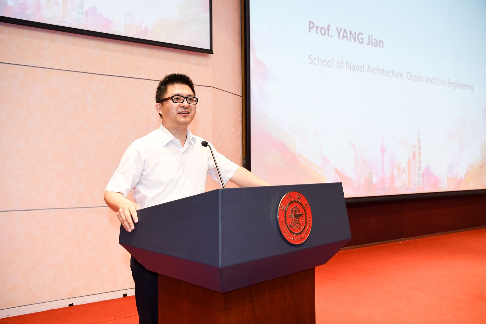
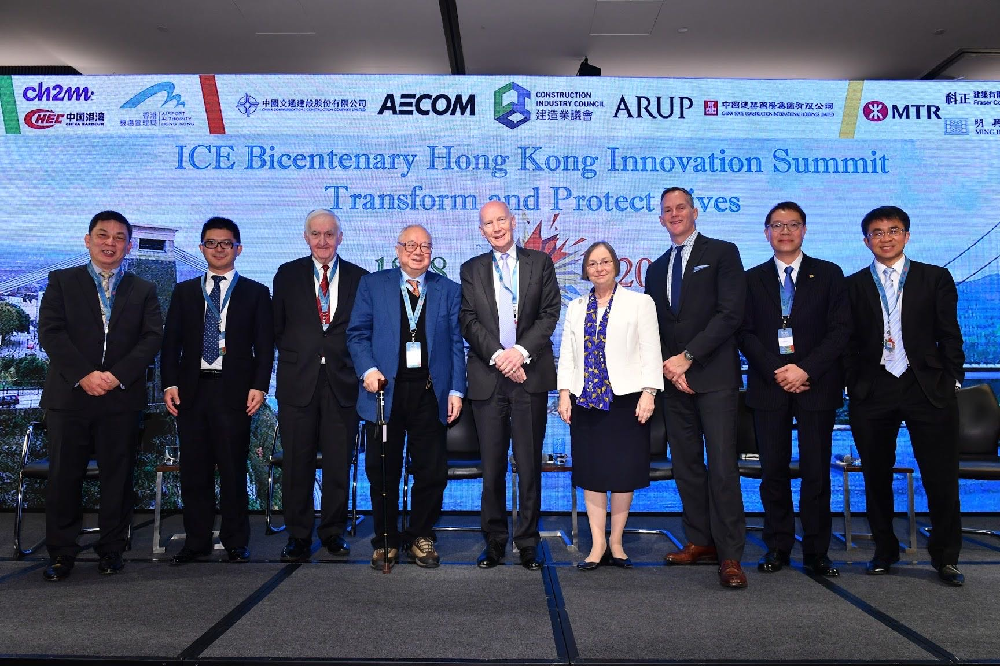
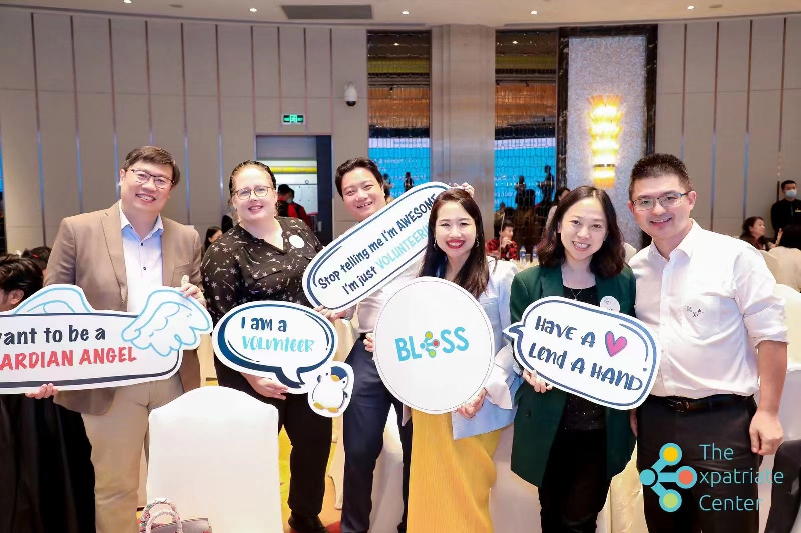

中国
终身教授
上海交通大学船舶海洋与建筑工程学院 副院长
杨健教授在英国和中国的多所大学拥有20多年的教学、研究和工程咨询经验。他的研究兴趣包括绿色建材和建筑、智能建筑和数字创新等领域。他指导了50多名来自世界各国的博士/硕士生。在目前的职位上，他领导着一个由30名研究人员组成的团队。

他是英国土木工程师学会（FICE）会士和结构工程师学会（MIStructE）特许会员，在多个国际和国家专业委员会任职，如IStructE、ICE和中国建筑学会，是4家国际期刊的编委会成员。他主持了30多项基金项目，发表了近200篇同行评议的期刊论文，应用超过4000条。

”在英国读书，工作，生活的那些年，让我和我的家庭深深体会到作为一个外国人在异国异乡的不易，在上海，我遇到了外籍人士中心TEC，参与过TEC很多有意义的活动，尤其是教育类相关的国际化论坛，我非常愿意作为一个TEC志愿者，TEC的好朋友在这个平台上一起支持和帮助在上海的外籍人士生活，工作在这里，融入这个城市，把这里当做他们的第二故乡。“
